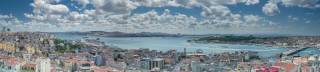
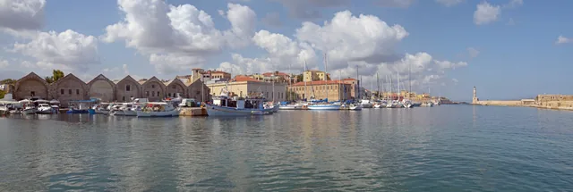

INTERNAL REVIEW — no editorial approval recorded. Neither photograph is served by the product. Original aspect ratios are preserved in the prepared WebPs; the proposed hero and card crops below require owner review.
Istanbul — UNAPPROVED
Hero crop

Card crop
Istanbul
Tolga Tüfekçi · Wikimedia Commons · CC BY-SA 4.0 · resized to WebP; cropped for display. Individual Commons source · Licence and share-alike.
Commons file description, Galata Tower camera coordinates and visual inspection identify Istanbul, Türkiye.
Historical photograph; proposed crops and attribution require owner review. No usage frequency is claimed.
Crete — Chania old harbour — UNAPPROVED
Hero crop

Card crop
Crete — Chania old harbour
Ввласенко (Volodymyr Vlasenko) · Wikimedia Commons · CC BY-SA 3.0 · resized to WebP; cropped for display. Individual Commons source · Licence and share-alike.
Commons file description, coordinates and visual inspection identify Chania old harbour on Crete, Greece. This is a specific part of the island, not an image of every destination area or an airport.
Historical photograph; proposed crops and attribution require owner review. No usage frequency is claimed.